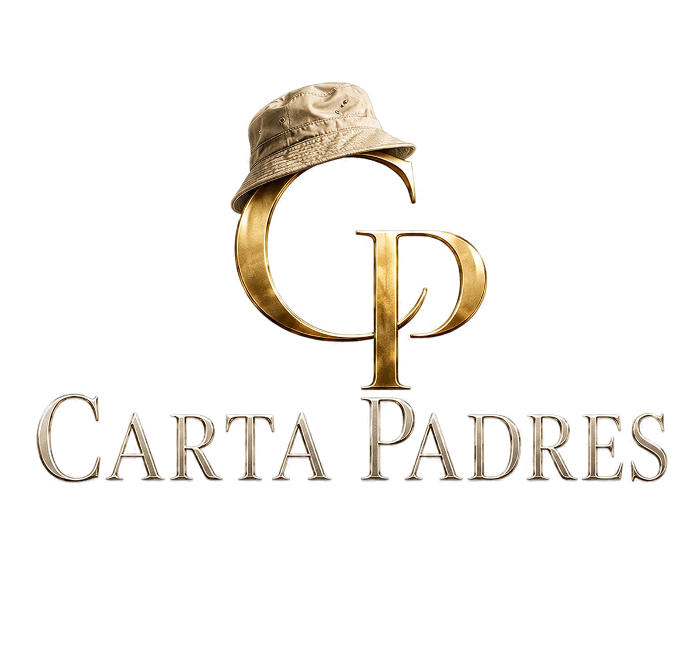
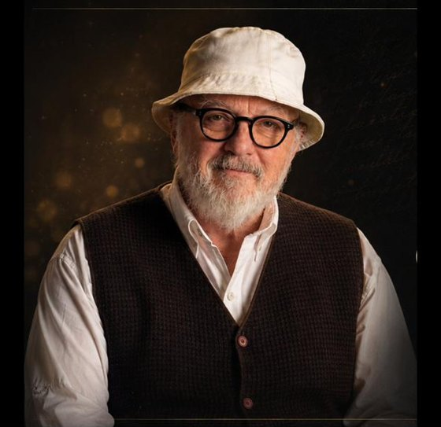

Ayudo a padres de niños y adolescentes a reconstruir el vínculo, con herramientas simples que funcionan en casa.
Jugá: ¿entendés lo que tu hijo te quiere decir? →Probá este juego de 2 minutos. Te muestro algo que dicen los hijos, y vos elegís qué responderías. Sin registro. Solo para ver con otros ojos.

Soy Patricio Dessein. Hace más de diez años empecé un camino personal: revisar mis propios vínculos, los patrones que heredé, la forma en que me relacionaba con los que más quiero. Ese trabajo me cambió. Y me llevó a lo que hago hoy.
Antes pasé más de veinte años en los medios —fui vicepresidente del directorio de la agencia de noticias DYN y directivo de La Gaceta de Tucumán, y produje cine—. Mi oficio siempre fue el mismo: entender qué le pasa a la gente y encontrar la forma de comunicarlo.
Hoy acompaño a mamás y papás de toda Hispanoamérica a reconstruir el vínculo con sus hijos: niños, adolescentes e hijos ya adultos. Creé dos programas, Creando Puentes para niños y para adolescentes, y una comunidad que ya supera el millón y medio de personas en más de quince países.
No tengo un título de psicólogo y no pretendo tenerlo. Lo que tengo son herramientas concretas, una mirada honesta y años escuchando a madres y padres reales. Me sigo formando todo el tiempo, con cursos online y con referentes del desarrollo personal. Pero lo que más me enseñó fue escuchar.
Te escuchás levantando la voz y no te reconocés. Querés poner límites sin convertir tu casa en un campo de batalla.
Tu hijo se encierra, contesta con monosílabos, vive en el celular. Extrañás a alguien que vive en tu casa.
Hacés todo lo que podés y sentís que nada alcanza. Te falta una forma distinta de mirar lo que pasa.
No es una pelea grande. Son mil pequeñas distancias. Y querés frenarlas antes de que se vuelvan costumbre.
Nada de esto te hace una mala madre o un mal padre. Significa que algo cambió y nadie te dio el manual. Para eso estoy.
Dos programas según la edad de tus hijos. Mismo enfoque: herramientas concretas, comunidad real y acompañamiento sostenido. Acceso de por vida.
Construí el vínculo antes de la adolescencia, en la etapa donde todo se está cableando.
Seguí siendo su lugar seguro, incluso cuando su único idioma son los gruñidos.
Garantía de 7 días en todos los niveles: si en la primera semana sentís que no es para vos, te devuelvo el 100%.
La versión Premium suma al programa completo 2 sesiones privadas 1 a 1 conmigo, en videollamada, para trabajar tu caso puntual: vos, tu hijo, tu casa real.
El escalón más alto: todo lo del programa y del Premium, más 4 sesiones 1 a 1 conmigo, una por semana. Un mes entero trabajando juntos, mano a mano, sobre tu familia. Nada de teoría complicada: acá todo es práctica, con ejercicios concretos pensados para tu caso.
Cupos limitados. Trabajo personalmente con un grupo reducido de familias por mes. Prefiero acompañar a pocas familias de verdad, antes que a muchas a medias. Cuando se completan los lugares del mes, se abre lista de espera.
“Sumarme al programa fue una de las mejores decisiones. Profundicé el vínculo con mis hijos, aprendí a poner límites desde el amor y me sentí parte de una red de padres. El cambio fue inmediato y profundo.”
“El contenido me sorprendió: claro, brillante y práctico. Lo que parecía complicado ahora lo aplico con sencillez. Y el grupo de padres me dio confianza.”
“Lo recomiendo sin dudar. Me ayudó a acercarme al padre que siempre quise ser. Hoy siento que crecemos juntos como familia.”
“Te transforma, lo hace desde el corazón. Da herramientas para educar, querer y acompañar a nuestros hijos. Este programa es transformador.”
“El costo y el tiempo valió la pena. Cada clase valió la pena. Aprendí de mis errores. El coach es formidable. Funciona.”
“En el primer encuentro entendí que el cambio era desde mí. Me dio herramientas poderosísimas. Recomiendo las sesiones de coaching personales.”
Si llegaste hasta acá, ya sé algo de vos: te importa. Eso solo ya te pone por delante. No hace falta que tengas todas las respuestas. Solo que des el primer paso.
Elegí según la edad de tus hijos: